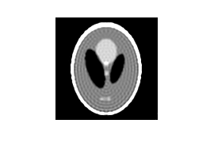
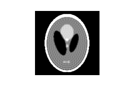
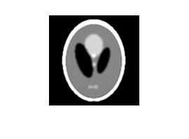
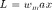
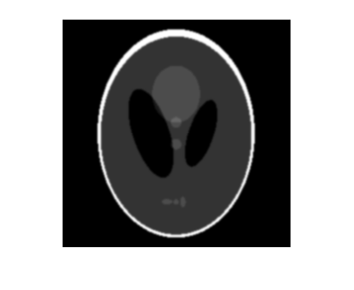
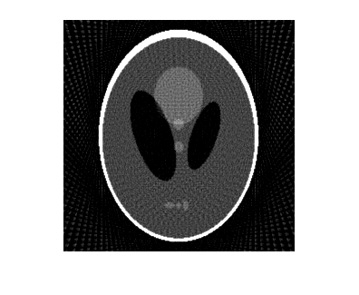
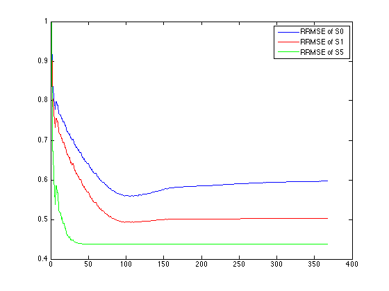

Question 2
Contents
Compute Radon transform
clc;clear;close all;
f = phantom(256);
figure
imshow(f)
theta = 0:3:177;
R = radon(f,theta);
Part a:
Ram-Lak filter
R_filtered = myFilter(R, 0.5,'Ram-Lak'); f_recon = backproj(R_filtered,theta); figure imshow(f_recon) R_filtered = myFilter(R, 1,'Ram-Lak'); f_recon = backproj(R_filtered,theta); figure imshow(f_recon)
 
 Shepp-Logan filter
R_filtered = myFilter(R, 0.5,'Shepp-Logan'); f_recon = backproj(R_filtered,theta); figure imshow(f_recon) R_filtered = myFilter(R, 1,'Shepp-Logan'); f_recon = backproj(R_filtered,theta); figure imshow(f_recon)
Cosine filter
R_filtered = myFilter(R, 0.5,'Cosine'); f_recon = backproj(R_filtered,theta); figure imshow(f_recon) R_filtered = myFilter(R, 1,'Cosine'); f_recon = backproj(R_filtered,theta); figure imshow(f_recon)
Observation
Images on the right i.e. those filtered with  has more higher freqeuncy components like 'dots' etc. This is because higher frequencies are let in by the filter. Also, images reconstructed gets smoother with the filters as expected from the frequency response of the filters.
Part b:
Generate blurred images
f0 = phantom(256); figure imshow(f0) mask = fspecial ('gaussian', 11, 1); f1 = conv2 (f, mask, 'same'); figure imshow(f1) mask = fspecial ('gaussian', 51, 5); f5 = conv2 (f, mask, 'same'); figure imshow(f5) clc
Compute radon tranform
R0 = radon(f0,theta); R1 = radon(f1,theta); R5 = radon(f5,theta);
Reconstruct using Ram-Lak filtered back projection
R_filtered0 = myFilter(R0, 1,'Ram-Lak'); f_recon0 = backproj(R_filtered0,theta); figure imshow(f_recon0) R_filtered1 = myFilter(R1, 1,'Ram-Lak'); f_recon1 = backproj(R_filtered1,theta); figure imshow(f_recon1) R_filtered5 = myFilter(R5, 1,'Ram-Lak'); f_recon5 = backproj(R_filtered5,theta); figure imshow(f_recon5)
Compute RRMSE
disp(RRMSE(f0,f_recon0)) disp(RRMSE(f1,f_recon1)) disp(RRMSE(f5,f_recon5))
0.5972
0.5022
0.4382
Observation:
As can be seen from above, RRMSE is the highest for the unblurred image and least for the highest blurred image. This is because a) there is noise from discretization of theta b) this noise is mitigated because of gaussian blur of the image S5. So highest blurred image has least error.
Part c
h = waitbar(0,'Please wait...'); N = size(R,1); RRMSE0_history = zeros(N,1); RRMSE1_history = zeros(N,1); RRMSE5_history = zeros(N,1); for i = 1:N R_filtered0 = myFilter(R0, i/N,'Ram-Lak'); f_recon0 = backproj(R_filtered0,theta); R_filtered1 = myFilter(R1, i/N,'Ram-Lak'); f_recon1 = backproj(R_filtered1,theta); R_filtered5 = myFilter(R5, i/N,'Ram-Lak'); f_recon5 = backproj(R_filtered5,theta); RRMSE0_history(i) = RRMSE(f0,f_recon0); RRMSE1_history(i) = RRMSE(f1,f_recon1); RRMSE5_history(i) = RRMSE(f5,f_recon5); waitbar(i/N) end close(h) figure plot(RRMSE0_history) hold on plot(RRMSE1_history,'r') plot(RRMSE5_history,'g') legend('RRMSE of S0','RRMSE of S1','RRMSE of S5')
Observation:
RRMSE is highest for L = 1. This is because this means that there is no filtering and making most frequency components 0. It increases again because now noise is being amplified with large L.